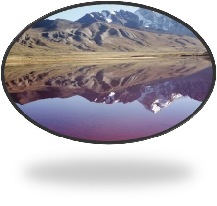
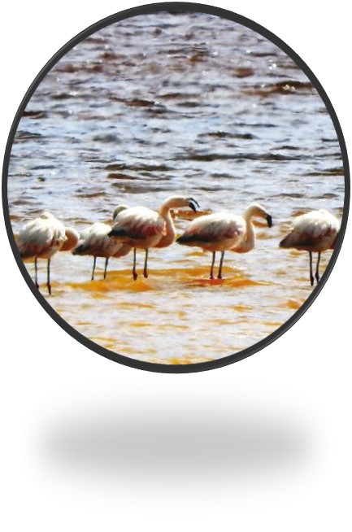
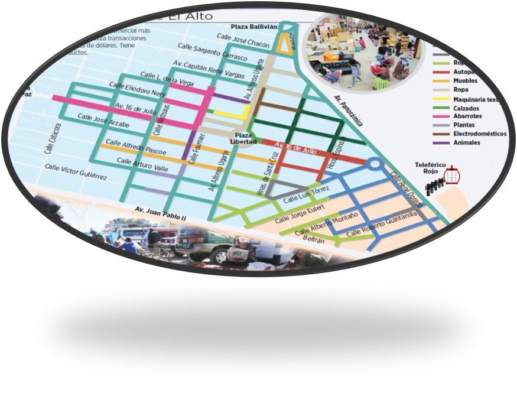
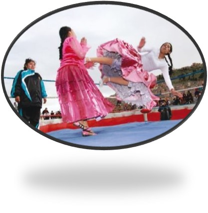
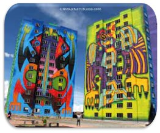
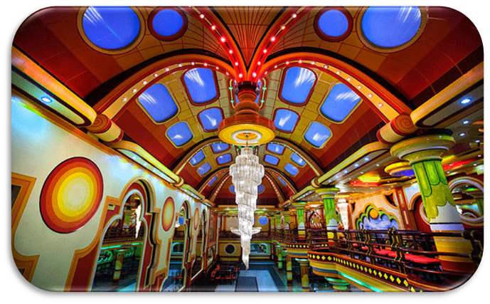
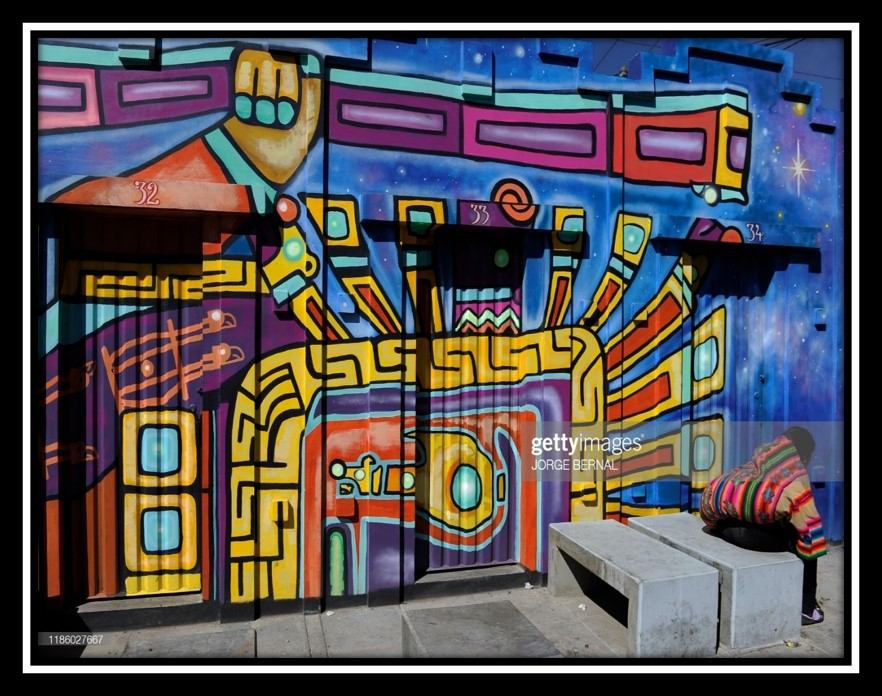

En el alto los cerros tienen rastro o por lo menos eso aparenta las formaciones geograficas del valle Kaque Marka.Son producto de la erocion por la lluvia, viento y calor
La region del Norte, se convirtio en el habitat de los flamencos que emigraron del desaparecido lago Poopo.Quienes van a la rutas Qhutaña quedan sorprendidos por los colores de la laguna
La feria de la 16 de julio nacio como un sector de trueque, entre campesinos de las provincias eran dos cuadras y ahora abarca 33 hectareas.
El show de las cholitas cachaskanistas es un importante atractivo. Son mundialmente conocidas, mujeres de pollera, patrimonio de la ciudad.
Los cholets la denominacion que reciben los edificios pertenecientes a un estilo arquitectonico andino desarrollado en Bolivia. El termino fue originado por la combinacion de las palabras cholo y chalete.
es la denominacion que reciben los edificios pertenecientes a un estilo arquitectonico andino desarrollado en Bolivia. El termino fue originado por la combinacion de las palabras cholo y chalete.
La historia de los Gun.
Las obras que se exponen son de grandes maestros contemporaneos en el campo de la pintura y la escultura. Tras una lucha de 12 años, se inaguro el 29 de mayo de 2002. En el se expone la coleccion de pintura.
